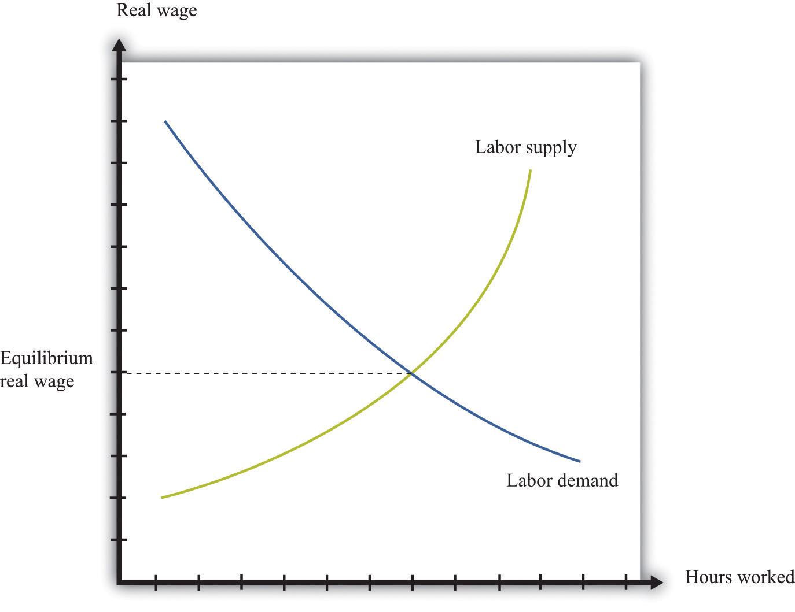
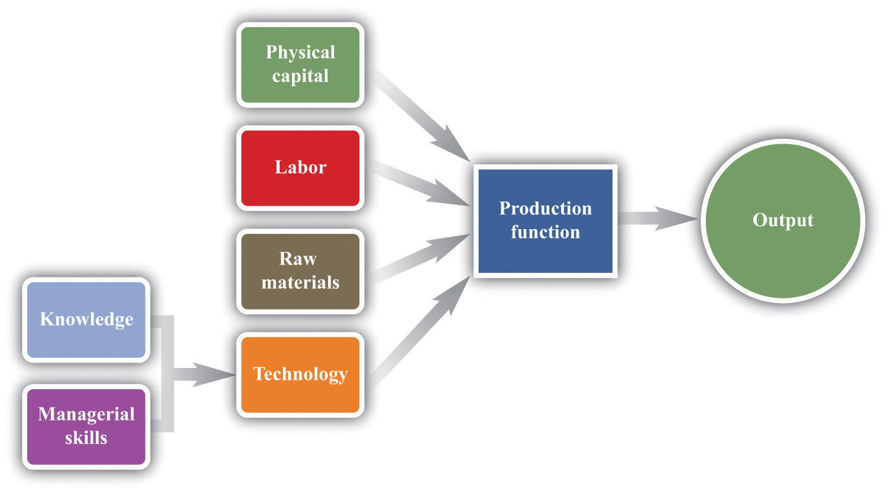
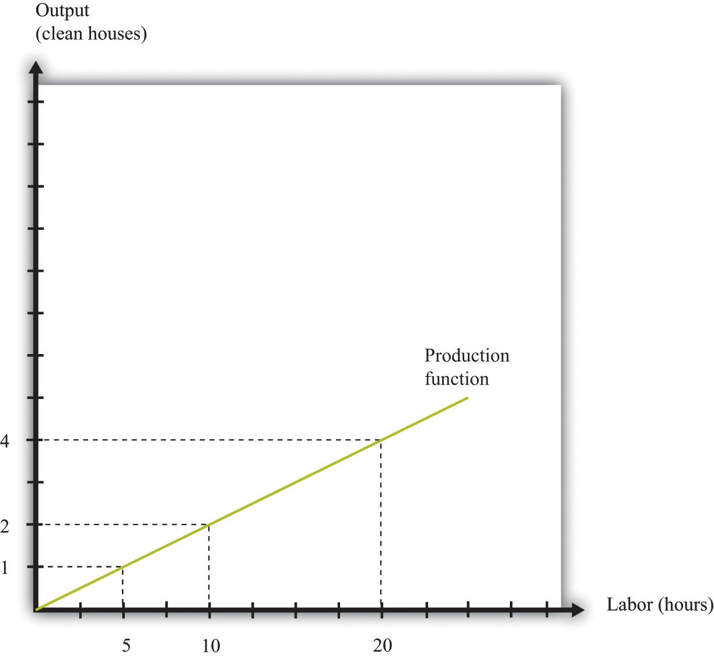
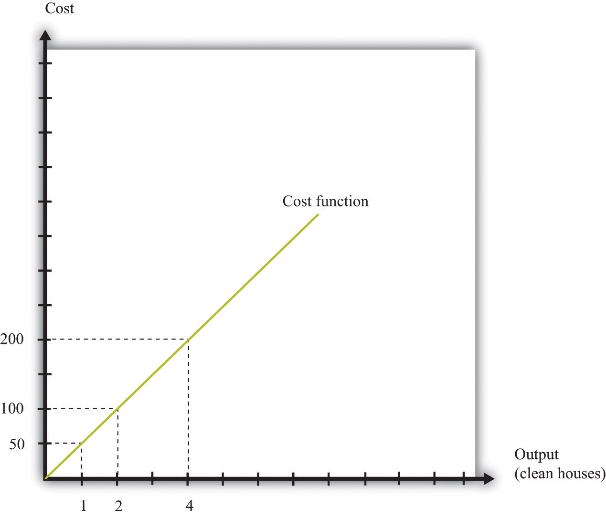
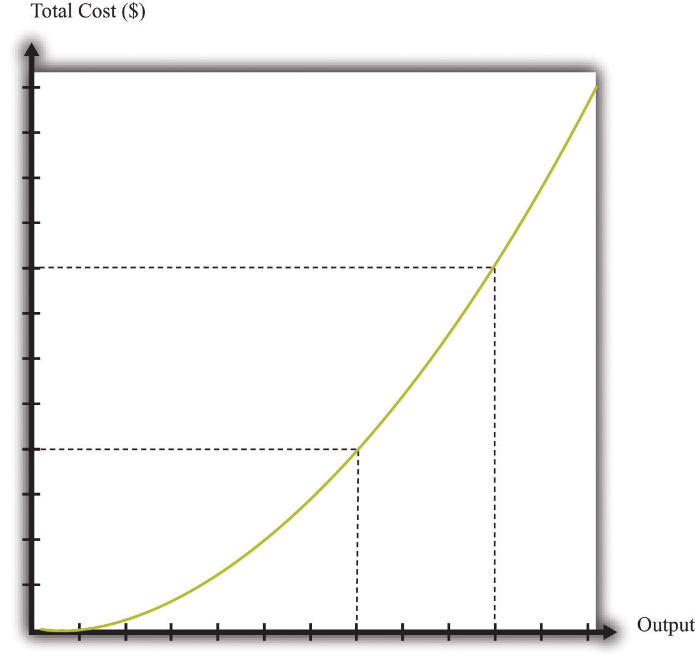
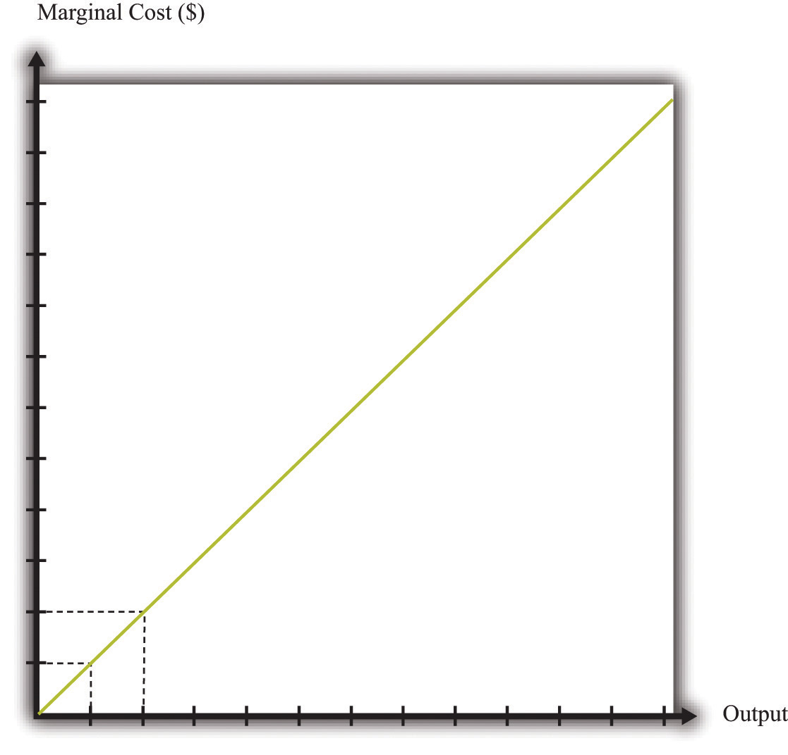
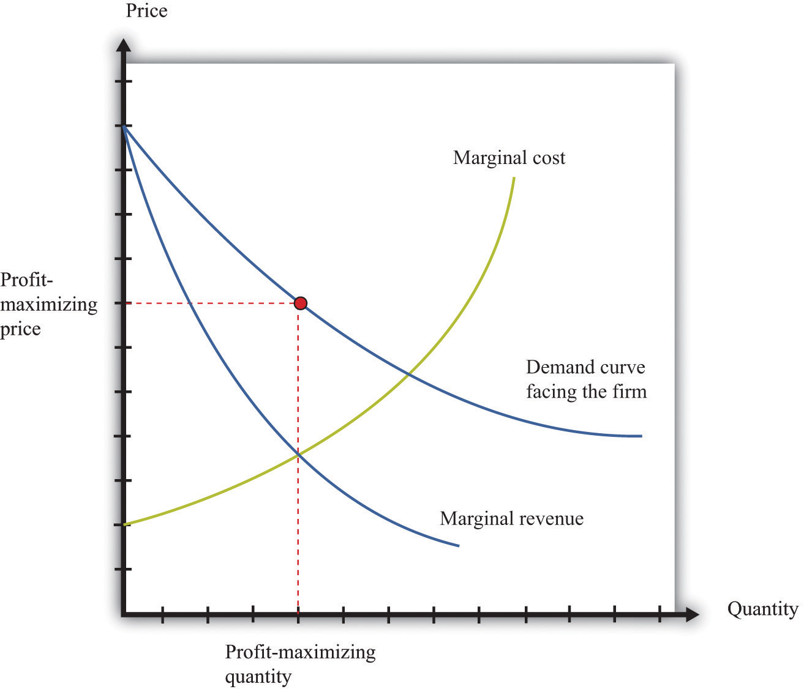
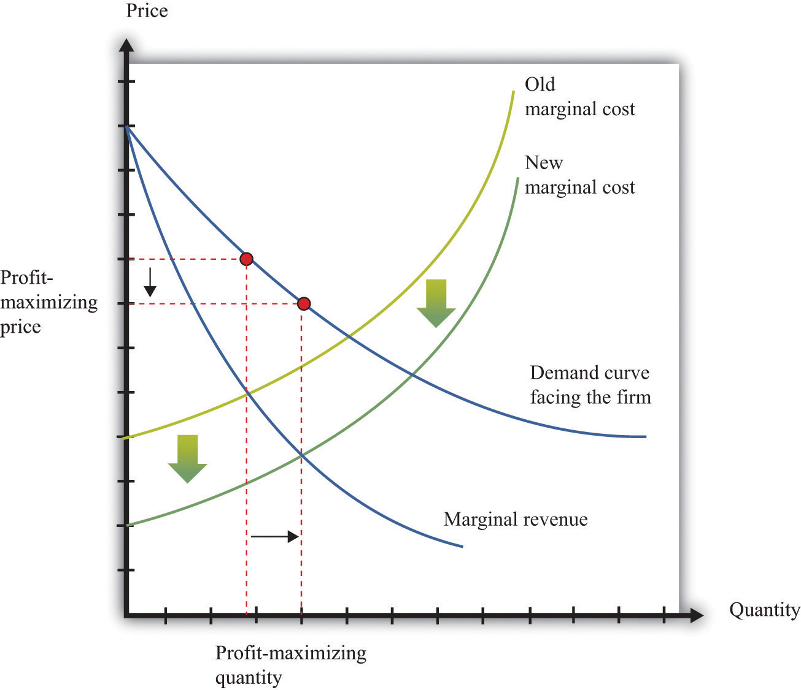
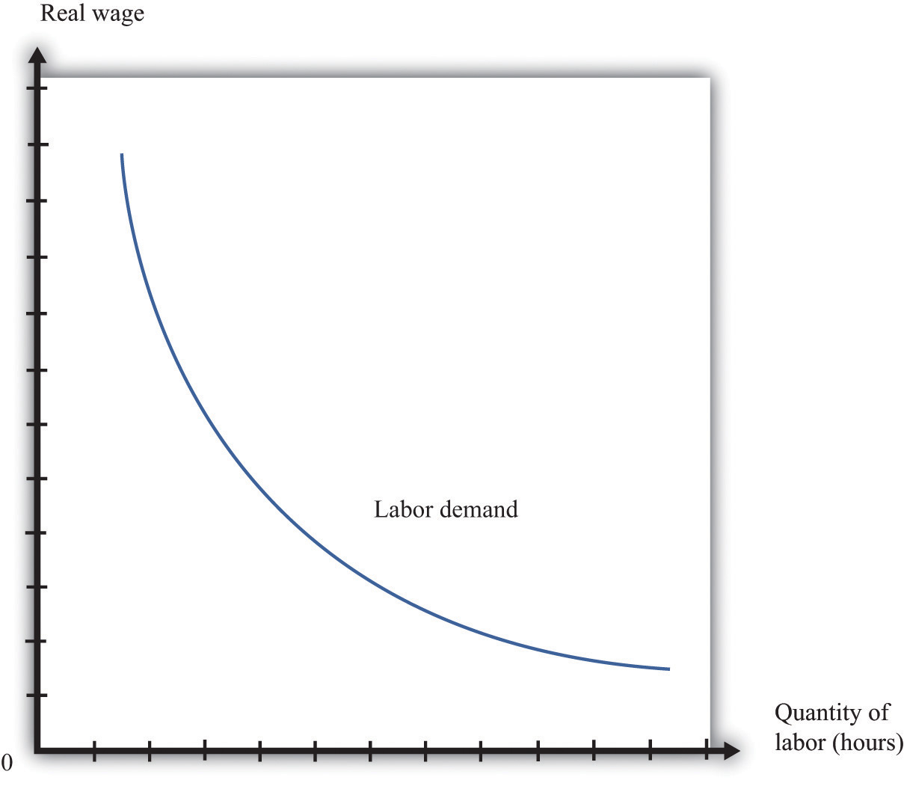
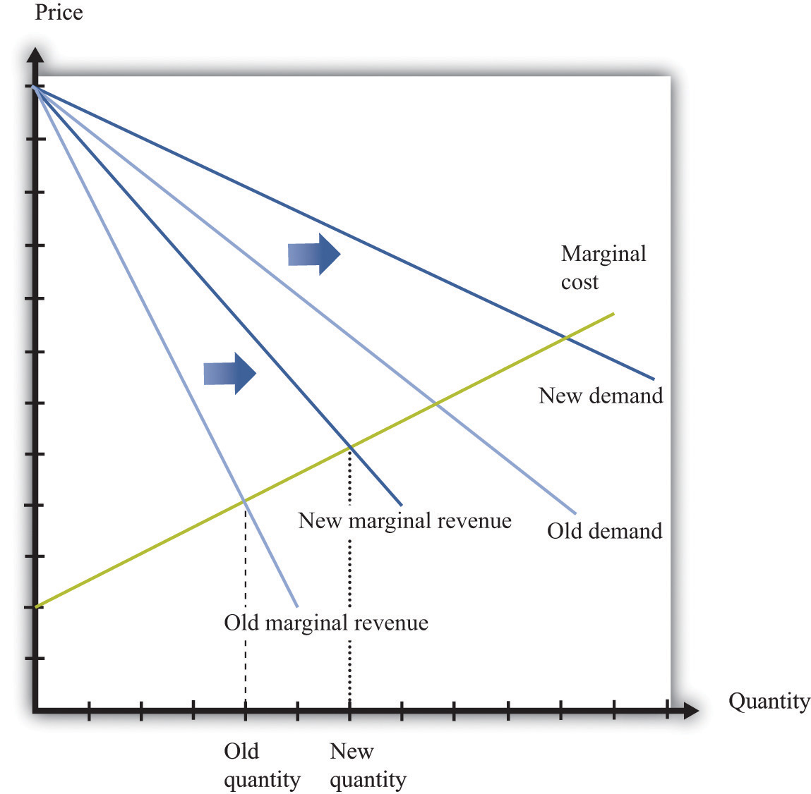

When economists are asked to explain the creation and destruction of jobs in an economy, they will typically begin with a diagram of supply and demand in the labor market. In the labor market, the real wage (on the vertical axis) and the total number of hours worked (on the horizontal axis) are determined by the interaction of labor supply and labor demand. As shown in Figure 9.4 "Labor Market Equilibrium", equilibrium in the labor market occurs at the wage and employment level such that the number of hours supplied and demanded is equal.
Figure 9.4 Labor Market Equilibrium
The equilibrium real wage in the labor market is the price where supply equals demand.
Toolkit: Section 31.3 "The Labor Market"
See the toolkit for more discussion on the labor market.
The upward-sloping supply curve tells us that households will want to supply more labor time as wages increase.Labor supply is discussed in Chapter 4 "Everyday Decisions".
Labor demand slopes downward for two analogous reasons:
Thus an increase in wages will induce job destruction, and a decrease in wages will induce job creation.
Firms hire labor to help them produce output. The amount of labor that a firm needs depends on the amount of output that it wants to produce. At the same time, its decision about how much to produce depends on its costs of production, which include the cost of labor. Our task here is to combine these ideas. The decision about how much labor to hire is only one of a large number of choices made by a firm’s managers. Of these, the most fundamental decisions are the following:
A firm’s managers should actually answer these questions in the reverse order:
We follow this logic in our discussion.
Toolkit: Section 31.15 "Pricing with Market Power"
You can review the demand curve facing a firm and the details of pricing with market power in the toolkit.
A firm possesses a means of turning inputs into outputs. For example, Starbucks produces, among other things, grande vanilla low-fat decaf lattes. This drink is an example of a Starbucks output. The list of inputs that Starbucks needs to produce this product is much too long to write out in full but includes the following:
This list doesn’t include any of the “back office” aspects of Starbucks’ operations, such as accounting, payroll, or the logistics of sourcing coffee beans and delivering them to individual stores. Other firms, of course, would have a very different list of inputs. So if we want to talk in abstract terms about the production of a firm, we need a description of production that could apply not only to Starbucks but also to General Motors, IKEA, your local computer repair store, and a manufacturer of paper clips. Therefore, we group inputs into broad categories called factors of productionThe inputs used in a firm’s production process, primarily physical capital, labor hours, raw materials, and technology..
Toolkit: Section 31.17 "Production Function"
Economists group the inputs of any firm into a small number of general categories: raw materials, capital, and labor. We call these inputs a firm’s factors of production.
You can think of raw materials as the things that are transformed in the production process. In our Starbucks example, these include milk, coffee beans, and electricity. Labor refers to the time of the employees who work at a firm, so the time put in by a Starbucks’ barista counts as labor. Capital refers to goods that are used to help with production but are not used up in the process. The espresso machine is one of Starbucks’ capital goods; others are the tables and chairs in the café.
Starbucks’ technologyA means of producing output from inputs.—which we also think of as a factor of production—is the knowledge that allows it to take all these inputs and turn them into an output—the final product that people actually want to buy. It is this knowledge that ultimately lies behind Starbucks’ existence as a firm. Included in the technology are the managerial skills that allow Starbucks to operate effectively.
Figure 9.5 The Technology of a Firm
The production function combines a firm’s physical capital stock, labor, raw materials, and technology to produce output. Technology is the knowledge (the blueprints) that a firm possesses, together with managerial skills.
We represent the production process of a firm schematically in Figure 9.5 "The Technology of a Firm". Our description is quite general and can apply to nearly any kind of firm—for example, a lawyer’s office, Walmart, a university, and a child’s lemonade stand. Most people find it easiest to visualize a production function in terms of physical manufacturing, such as a production line for automobiles. Think of a firm’s capital as factory buildings and machinery; its labor as the workers on the production line; and its raw materials as the steel, plastic, and glass that it purchases.
We summarize the technological possibilities of a firm using a production functionA description of how much output a firm can produce as it varies its inputs., which is a description of how much output a firm can produce as it varies its inputs. Even though a typical firm’s production function contains many different inputs, we can understand most of the key features of the production function using an example where labor is the only factor of production. Although there are few goods or services that literally require no inputs other than labor, there are many services that are highly labor intensive, such as babysitting, housecleaning, and personal training at a gym.
To be concrete, think about housecleaning and suppose it has the following production function:
output = productivity × hours of labor input,where we think of productivity as just some number. If output measures clean houses, and if it takes 5 hours of labor to produce one clean house, then productivity is 0.2, and the production function is
output = 0.2 × hours of labor input.The production function tells us the level of output of a firm for given levels of labor input. Labor input is the total hours of labor time used by a firm. At this point, we are not distinguishing between hours worked per person and the number of people working, so a firm with 8 employees each working 20 hours per week has the same weekly labor input as a firm with 4 employees each working 40 hours per week. Table 9.1 "Production Function for Housecleaning" lists the amount of output that a housecleaning firm can obtain from various levels of input. We call this a linear production function because its graph is a straight line, as shown in Figure 9.6 "A Linear Production Function".
Table 9.1 Production Function for Housecleaning
| Labor Input (Hours) | Output (Clean Houses) |
|---|---|
| 0 | 0 |
| 1 | 0.2 |
| 2 | 0.4 |
| 3 | 0.6 |
| 4 | 0.8 |
| 5 | 1 |
| 10 | 2 |
| 15 | 3 |
| 20 | 4 |
| 25 | 5 |
| 30 | 6 |
| 35 | 7 |
| 40 | 8 |
Figure 9.6 A Linear Production Function
A production function shows the maximum amount of output produced, given a level of labor input.
The marginal product of laborThe amount of extra output produced from one extra hour of labor input. is the amount of extra output produced from one extra hour of labor input and is defined as
When the production function is linear, the marginal product of labor is constant. It is equal to the number we labeled productivity in our original production function.
In most cases, the marginal product of labor is not constant. To understand why, imagine you are managing a Starbucks outlet. You already have the machines to produce espresso, and you have lots of coffee beans on hand. You also have 500 square feet of space for making coffee and charging customers. But you still need labor. If you have no barista to operate the espresso machine, then you will have no output. If you hire one worker, you will be able to serve coffee to people. Adding the first worker will increase output considerably. However, that person must not only make the coffee but also clear the tables and handle the cash register. Adding a second worker to help with the register and clear tables will increase output even more. Now suppose you keep increasing the number of workers in the 500 square feet of space. After the third or fourth worker, they will start to bump into each other, and the barista will start to be very annoyed and unproductive. In other words, because one of your inputs—the amount of available space—is fixed, each additional worker contributes less and less to output. We call this the diminishing marginal product of laborThe idea that each additional hour of labor input contributes a smaller and smaller amount to output..
Table 9.2 "Production Function for Coffee with a Diminishing Marginal Product of Labor" is an example of a production function with a diminishing marginal product of labor. In creating this table, the labor input is changed while holding all other inputs (the size of the café, the number of espresso machines, etc.) fixed.
Table 9.2 Production Function for Coffee with a Diminishing Marginal Product of Labor
| Labor Input (Hours) | Output (Cups of Coffee) | Marginal Product of Labor |
|---|---|---|
| 0 | 0 | |
| 1 | 10 | 10 |
| 2 | 14.1 | 4.1 |
| 3 | 17.3 | 3.2 |
| 4 | 20 | 2.7 |
| 5 | 22.4 | 2.4 |
| … | ||
| 10 | 31.6 | 1.6 |
| 15 | 38.7 | 1.3 |
| 20 | 44.7 | 1.1 |
| 25 | 50.0 | 1.0 |
| 30 | 54.8 | 0.9 |
| 35 | 59.2 | 0.9 |
| 40 | 63.2 | 0.8 |
The marginal product of labor is shown in the third column. For the first few entries, you can calculate it directly from the table because you can easily determine how much output changes from one row to the next. For example, the marginal product of the third hour of labor is 17.3 – 14.1 = 3.2. Finding the marginal product of, say, the 40th unit of labor from the table is trickier because the table doesn’t tell us how much we can produce with 39 hours of labor. Looking back at the formula for the marginal product of labor, however, we can calculate it:
We illustrate this production function in Figure 9.7 "A Production Function with a Diminishing Marginal Product of Labor". Notice that while the slope of the production function is always positive, the slope decreases as the labor input increases.
Figure 9.7 A Production Function with a Diminishing Marginal Product of Labor

This production function exhibits diminishing marginal product of labor: as more labor is added to a firm, output increases at a decreasing rate.
Toolkit: Section 31.17 "Production Function"
The production function is a description of how much output a firm can produce as it varies its inputs. Typically, we suppose that the production function exhibits the following:
The first property means that adding more labor into production means more output—that is, the slope of the production function is positive. The second property explains how the marginal product of labor varies as labor input increases. Though the marginal product of labor is always positive, it will generally decrease as more labor is added to a production process. That is why the second property is called diminishing marginal product of labor. (It is technically possible that the marginal product of labor could even become negative. But because a firm would never pay for workers when they decrease output, we never expect to see a firm operating with a negative marginal product of labor.)
Now that we have a way of describing a firm’s ability to produce goods, we are well on our way to understanding how a firm produces output. This then allows us to understand how much it will cost a firm to produce different levels of output. Our next goal is to describe these costs. The total cost of producing some specified level of output represents the cost of acquiring all the inputs needed.
To see how this works, let us determine the costs for our earlier housecleaning example. Recall that the production function is
output = 0.2 × number of hours of labor input.Suppose that housecleaners can be hired at $10 per hour:
cost of one clean house = 5 hours × $10 per hour = $50.The cost of two clean houses is $100, the cost of three clean houses is $150, and so on.
More generally, suppose we take the linear production function and divide both sides by the level of productivity. We get
The cost of a single hour of labor is given by the wage. Thus we can write
This is the cost function of a firm, which is illustrated in Figure 9.8 "The Cost Function". Pay careful attention to the axes in Figure 9.6 "A Linear Production Function" and Figure 9.8 "The Cost Function". Figure 9.6 "A Linear Production Function" has hours of labor on the horizontal axis and output on the vertical axis. Figure 9.8 "The Cost Function" has output on the horizontal axis and costs (= labor hours × wage) on the vertical axis.
Figure 9.8 The Cost Function
The cost function shows the cost of producing different levels of output.
The cost function in Figure 9.8 "The Cost Function" is linear. Because the production function has a constant marginal product of labor, the cost function displays constant marginal cost. What about the case in which the production function has a diminishing marginal product? Then additional labor provides less and less output. Turning this around, it follows that producing each additional unit of output requires more and more labor. We show this in Figure 9.9 "The Cost Function with a Decreasing Marginal Productivity of Labor". In this figure, the marginal cost is increasing, so the cost function gets steeper as we produce more output.
Toolkit: Section 31.14 "Costs of Production"
You can review the definition of marginal cost in the toolkit.
Figure 9.9 The Cost Function with a Decreasing Marginal Productivity of Labor
If a firm’s technology exhibits a diminishing marginal product of labor, the cost function will increase at an increasing rate.
We show the marginal cost curve in Figure 9.10 "The Marginal Cost Function". In this example, marginal cost is a straight line, but this need not be the case in general.
Figure 9.10 The Marginal Cost Function
If a firm’s technology exhibits a diminishing marginal product of labor, then the marginal cost will increase as output increases.
Marginal cost depends on the following:
If the costs of inputs increase, then the marginal cost is higher is well. If the productivity of the inputs into the production function is higher, then the marginal cost is lower. In fact, marginal cost can be written as
We can see from this equation that when the marginal product of labor decreases, the marginal cost of production increases. We see also that an increase in the cost of inputs—in this case an increase in wages—leads to an increase in the marginal cost of production.
There is one issue that we are ignoring here. Firms typically have many different ways in which they can produce the same quantity of output. A firm might have a choice between two production processes: (1) a process that is simple and cheap to operate but wasteful of raw materials and (2) a process with recycling that uses fewer materials but is more complicated and costly to run. As another example, if a construction company needs to dig a ditch, it could employ 20 people and equip each with a shovel, or it could hire a single individual and a backhoe. Economists say that the first process is labor intensive because it requires a lot of labor relative to capital; they call the second process capital intensive because it requires a relatively large amount of capital.
In medium-sized or large firms, there is usually a specific functional area, called operations, that decides how to produce output. Operational decisions are governed in large part by technical or engineering considerations: what are the ways in which it is physically possible to transform inputs into the desired output? Operational decisions also have an economic component. Given that there may be many different ways to get the same final amount of output, which is the most cost effective? In economics, not surprisingly, we focus on the second of these questions and leave the first to engineers and other technical experts.
The basic principle is intuitive: operations managers tend to choose methods of production that economize on relatively expensive inputs. For example, much garment manufacture takes place in countries like China or Vietnam, where wages are low (that is, labor is relatively cheap). As a result, the production processes tend to be highly labor intensive, using a lot of workers relative to the amount of machinery. By contrast, garment manufacture in richer countries (where labor is much more expensive) tends to use methods of production that require fewer people and more machines.
We simply presume that the operations function of a firm is doing a good job and has succeeded in finding the cheapest way of producing the firm’s output, taking into account both the technical aspects of production and the costs of different inputs. When we talk about the cost function of a firm, therefore, we are assuming that it gives us the lowest cost for producing each given level of output.
We have now completed our discussion of the first decision that managers must make: how to produce output. The production function tells us what a firm needs in terms of inputs—in this case, labor—to produce a given level of output. The more output a firm wants to produce, the more labor it will hire and the more jobs it will create. The cost function tells us the cost of producing different levels of output, and the marginal cost function tells us the cost of producing additional output.
Marginal cost is the critical ingredient in the next decision made by managers, which is selecting a point on the demand curve. We can think of managers as either choosing the price and then selling the quantity demanded at that price or choosing the level of output and selling it at the price that the market will bear. In either case, they are picking the point on the demand curve whereThis decision of the firm is also covered in detail in Chapter 7 "Where Do Prices Come From?".
marginal revenue = marginal cost.We show this decision graphically in Figure 9.11 "Output and Price Decisions of a Profit-Maximizing Firm".
Figure 9.11 Output and Price Decisions of a Profit-Maximizing Firm
A profit-maximizing firm produces a quantity such that marginal revenue equals marginal cost, and the price is determined by the demand curve.
In our discussion of costs to this point, we have not specified whether we were talking about the nominal wage (that is, measured in dollars) or the real wage (that is, adjusted for inflation). The most important thing is being consistent. If we use the nominal wage when calculating our cost functions, then we end up with nominal costs. If we use the real wage, then we end up with real costs. And when we equate marginal revenue and marginal cost, we must be sure that we measure in nominal terms or real terms (not a mixture).
The distinction becomes important only when the general price level changes, so it is not central to our discussion here. When the price level is constant, we can always just suppose that it is equal to 1, in which case the nominal wage and the real wage are equal. Still, when we draw diagrams of the labor market, we typically put the real wage on the axis, so from here on we will explicitly suppose that we are measuring everything in real terms.
We can now explain labor demand by a firm. There are two steps:
We already know that the marginal cost of production depends on the real wage: decreases in the real wage lead to decreases in real marginal costs. Figure 9.12 "The Effect of a Change in Marginal Cost on a Firm’s Choice of Output and Employment" shows how a decrease in the real wage affects the output and price decision of a firm. As the real wage decreases, the marginal cost of an additional unit of output decreases, so a firm will choose to produce more output. The price will decrease because the firm must lower the price to sell the additional output.
Figure 9.12 The Effect of a Change in Marginal Cost on a Firm’s Choice of Output and Employment
When the real wage decreases, marginal cost decreases, so the firm reduces price, increases output, and creates jobs.
Because a firm wants to produce more output, it will demand more hours of labor. In other words, a decrease in wages leads to an increase in the quantity of labor demanded. The resulting inverse relationship between the real wage and the amount of labor demanded is shown in Figure 9.13 "The Demand for Labor".
Figure 9.13 The Demand for Labor
As the real wage increases, the demand for labor input decreases.
The labor demand curve for a single firm is downward sloping. This is true for every firm in the labor market. The market demand curve for labor is obtained by adding together the demand curves of individual firms. So the market demand for labor is downward sloping as well.
We can now connect our understanding of the labor market with the data on net job creation that we showed in Figure 9.3 "US Net Job Creation from 2000 to 2009". Based on what we have learned, there are three main reasons why jobs might be created or destroyed: (1) changes in the real wage, (2) changes in productivity, and (3) changes in demand.
Changes in the cost of labor are one reason firms create or destroy jobs. Decreases in the real wage lead firms to produce more output and hire more workers, thus creating jobs. Increases in the real wage cause firms to produce less output and lay off workers. Going deeper, we can ask why the real wage might change. The answer comes from looking back at Figure 9.4 "Labor Market Equilibrium". The real wage changes, causing a change in the quantity of labor demanded, if the labor supply curve shifts.
Population growth is one source of a shift in labor supply. As the number of workers in the economy grows, then total labor supply will shift. At a given wage, there will be more workers and hence the labor supply curve will shift to the right. Other things equal, this causes a decrease in the real wage.
Changes in labor market participation also shift the labor supply curve. A leading example of this is the increased participation of women in the labor market. In the United States, the fraction of women in the labor force rose from about 20 percent in 1950 to about 70 percent in 2000. Participation might also change because of workers’ expectations about the future state of the labor market. If you are worried you won’t have a job next year, you might want to work this year.
Changes in productivity—more precisely, in the marginal product of labor—work exactly like changes in the real wage. Remember that marginal cost depends on both real wages and productivity. If productivity increases, perhaps because a firm has upgraded its capital equipment, then marginal cost decreases. Firms will produce more output and hire more labor. The opposite is true if productivity decreases: in this case, firms will produce less and destroy jobs.
Over long periods of time, productivity in an economy increases. This increase in productivity is driven largely by technological advances: firms get better at producing goods and services and so are able to produce them more cheaply. As workers’ productivity increases, firms demand more labor at any given wage.
When a firm’s product becomes more desirable in the market, the demand curve that it faces shifts outward. This shift in demand typically leads to an outward shift in marginal revenue, inducing a firm to produce more output and demand more labor. We show this in Figure 9.14 "The Effect of a Change in Demand on a Firm’s Choice of Output and Employment": an outward shift of a firm’s demand curve typically leads to an outward shift in labor demand.
Figure 9.14 The Effect of a Change in Demand on a Firm’s Choice of Output and Employment
An increase in demand typically leads to an increase in marginal revenue, which in turn induces firms to produce more output and create jobs.
Marginal cost is defined as
We also know that
and
change in cost = wage × change in labor input.Show how you can use these three equations to derive the condition in the text that